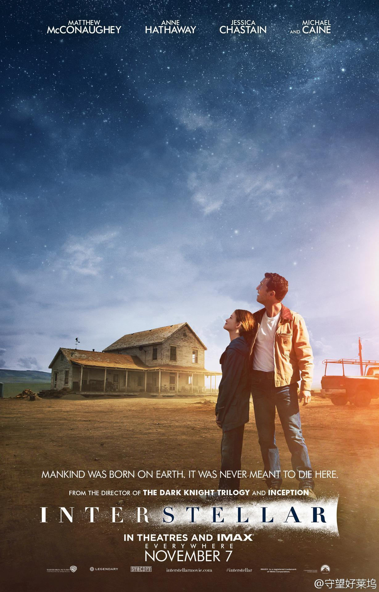
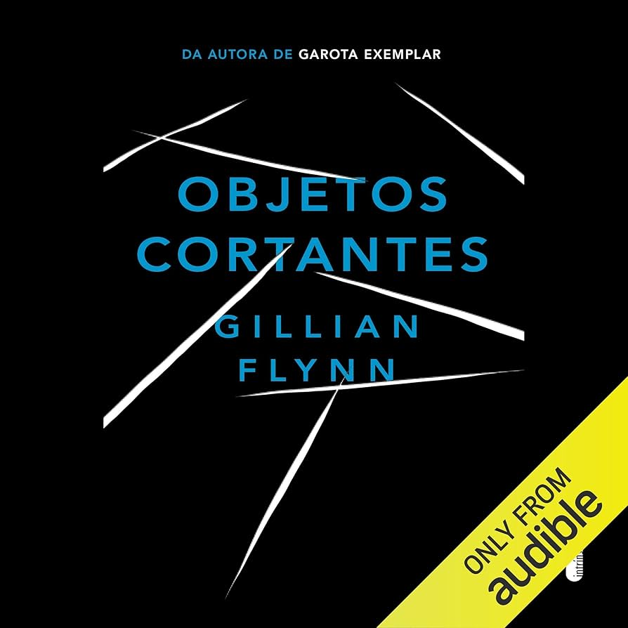

class FavoritosDaBia
Filmes, séries, jogos e livros que marcaram a minha vida
O melhor filme do mundo
"O amor é a única coisa que somos capazes de perceber que transcende as dimensões do tempo e do espaço. Talvez devêssemos confiar nisso, mesmo que não consigamos entender."
Ver maisO melhor livro do mundo
"Todo mundo tem um momento em que a vida sai dos trilhos. O meu foi no dia em que Marian morreu. O dia em que peguei aquela faca vem em segundo lugar, quase empatando."
Ver maisSobre mim
Olá! Eu sou a Bianca Silva, desenvolvedora em formação e apaixonada por boas histórias.
Criei este espaço para reunir filmes, livros, séries e jogos que me marcaram.
Espero que você encontre algo interessante para assistir ou ler!